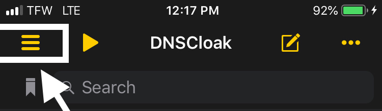
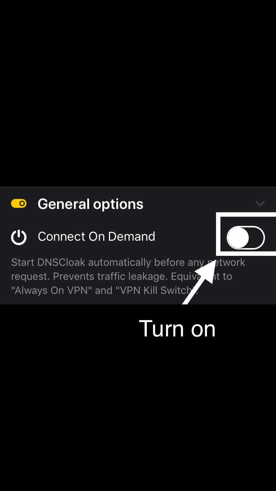
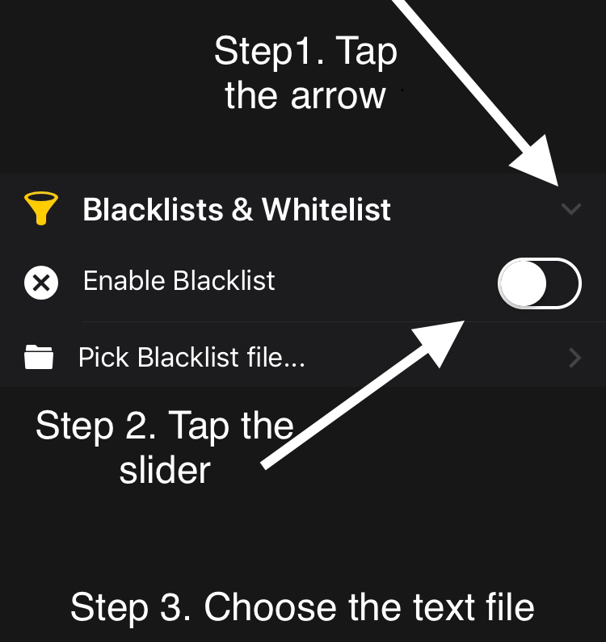
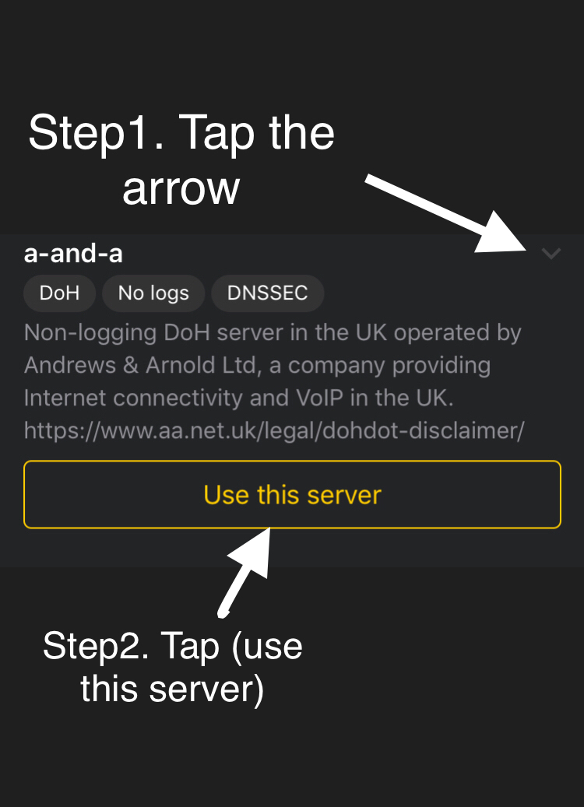

1. Open DNSCloak.
2. Tab on the 3 lines in the left corner

3. In DNSCloak Settings turn on "Connect on Demand"

4. Scroll in DNSCloak settings a bit down and tab on "Blacklist and Whitelist"..

5. Then turn on "Enable Blacklist", a file menu will open and select "OSCP.txt". (if you already enabled this options just tab on "Pick Blacklist File..")
6. Go back to the main page and Select the DNSServer "a-and-a".

7. Now open settings. Got to and turn on "General -> VPN -> DNSCloak -> (i) -> Connect on Demand"
8. Clear Safari History Cache.
You should now be able to download tutubox :).
Once you've downloaded your apps, open DNSCloak, and switch the blacklist to "PPQ&OSCP.txt"